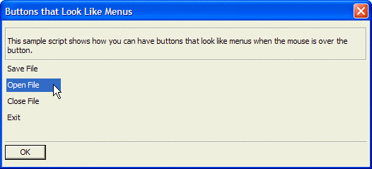

Menu Style Buttons
This example uses the button B directive, set to value "M", to cause the buttons to behave like menu entries.
ui_dlg_box("Buttons that Look Like Menus",<<%dlg% {frame=1,1} {region} {wrap=100}; This sample script shows how you can have buttons that look like menus when the mouse is over the button.; {endregion}; {region} <%B=M%15Save File!save>; <%B=M%15Open File!open>; <%B=M%15Close File!close>; <%B=M%15Exit!exit>; {endregion}; {lf}; {line=1,0}; <10&OK!ok>; ; %dlg%,<<%code% if a_dlg_button = "save" then a_dlg_button = "" ui_msg_box("Notice:","You pressed the save button.") else if a_dlg_button = "open" then a_dlg_button = "" ui_msg_box("Notice:","You pressed the open button.") else if a_dlg_button = "close" then a_dlg_button = "" ui_msg_box("Notice:","You pressed the close button.") else if a_dlg_button = "exit" then a_dlg_button = "" ui_msg_box("Notice:","You pressed the exit button.") end if %code%) |

Next
Limitations
Desktop applications only
See Also
Button B Directive, Miscellaneous Examples